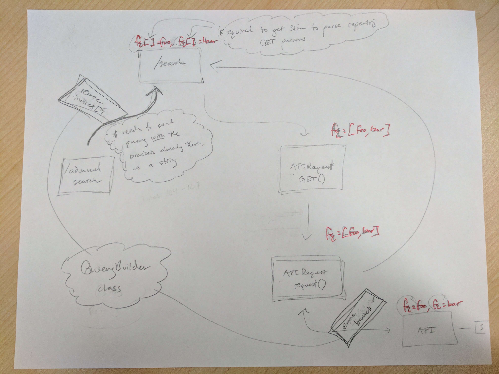

{
"published": true
}Re: the last couple of posts about repeating GET parameters, and how PHP is slightly unconventional in how it parses. Came up with a solution: a QueryBuilder class.

It was a particularly pernicious problem, and time will tell how well our solution scales and evolves. The problem came down to how the Slim PHP framework parsed GET parameters, and the Guzzle PHP client encoded GET requests.
Slim used the built-in PHP function, parse_str that followed the PHP convention to only capture repeating GET parameters when the GET parameter string contained square brackets [] around those repeating fields. For example:
?fq=foo&fq=bar would get truncated to 'fq'=>'bar'
However, if square brackets were used, repeating values would get picked up from ?fq[]=foo&fq[]=bar, and become 'fq'=['foo','bar'].
So, we needed to always send requests to our /search route with square brackets. But we did not want to the indices that http_build_query includes when building a GET param string, as that would hurt our ability to manipulate the URL by cherry-picking known parameters to remove.
Speaking of http_build_query, this is what Guzzle uses to build GET parameters for an HTTP request. As alluded to above, an associative array like 'fq'=['foo','bar'], would result in the following string, ?fq[0]=foo&fq[1]=bar.
This was also not ideal, as our API is not prepared to handle fq[n] fields of an unknown n quantity. The verdict is still out if/how python Flask-RESTful can handle that kind of regex parsing.
So, we needed to fix HTTP requests on the way out too. The end result was two places in a typical advanced query that required GET parameter fixing. We created a QueryBuilder class that is invoked where and when needed, to prepare I/O GET parameters. The best part is, this class has become a logical place to house any complex behavior related to search and query parameter parsing and prepping.
So what is this thing? When does QueryBuilder become a thing unto itself? Why can't Guzzle optionally not include indices in HTTP request when passed an associative array as parameters? Why can't Slim parse a route with repeating GET parameters that don't have square brackets?
These are the questions that make all of this occassionaly frustrating, but always interesting. Observing that libraries we use to parse and prepare HTTP requests were following conventions incompatible with components up and downstream, it prompted the creation of a class that is proving to be supremely helpful.